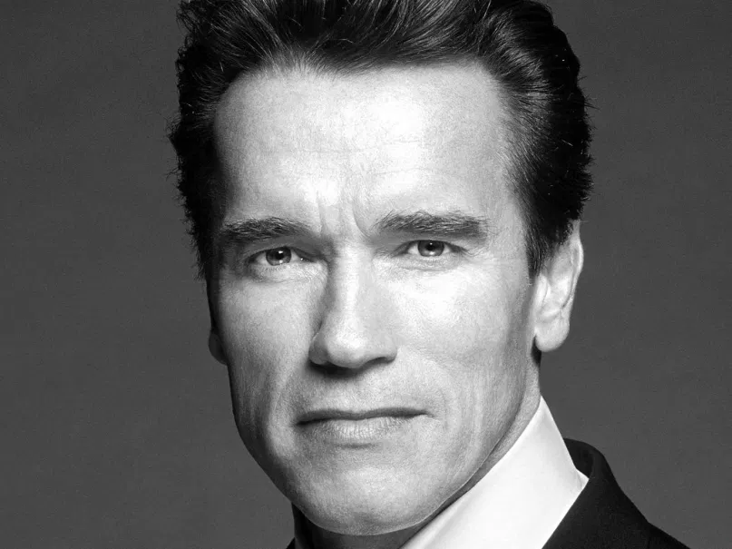

Arnold Schwarzenegger

A headshot of Arnold Schwarzenegger during the 2003 recall campaign.
A brief history
Arnold Alois Schwarzenegger was born on July 30, 1947, in Thal, Styria. At school, Schwarzenegger was reportedly academically average, but stood out for his "cheerful, good-humored, and exuberant" character. Arnold began weight training in 1960, when his soccer coach took his team to a local gym. He started his competitve bodybuilding carreer at 17.
Accomplishments:
-
In 1967, Schwarzenegger won the Mr. Universe title for the first time, becoming the youngest ever Mr. Universe at the age of 20.
-
In 1970, at age 23, he captured his first Mr. Olympia title in New York, and would go on to win the title a total of seven times.
-
In May 1980, he formally graduated and received his bachelor's degree in business administration and marketing.
-
Aronold served as the 38th Governor of California from 2003 to 2011.
Rules of success
Arnold uses these six rules to guide his success:
- Trust yourself.
- Don't be afraid to fail.
- Ignore naysayers.
- Work like hell.
- Give something back
- Break the rules when needed